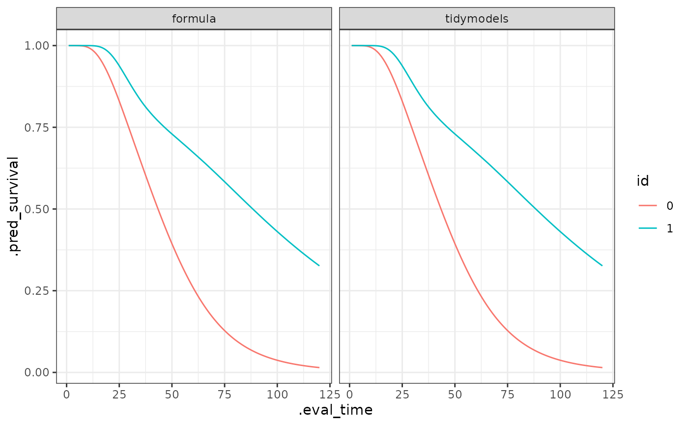

Get started
lnmixsurv.RmdThe model can be used with the usual formula interface or using the
tidymodels and censored structure.
Formula interface:
library(lnmixsurv)
set.seed(1)
mod1 <- survival_ln_mixture(Surv(y, delta) ~ x, sim_data$data, intercept = TRUE)
mod1
#> survival_ln_mixture
#> formula: Surv(y, delta) ~ x
#> observations: 10000
#> predictors: 2
#> ------
#> estimate std.error conf.low conf.high
#> (Intercept)_1 4.0452320 0.00687888 4.0365435 4.0533204
#> x1_1 0.8087434 0.01016414 0.7960715 0.8226437
#> (Intercept)_2 3.4301452 0.02004458 3.4034080 3.4552466
#> x1_2 0.4890141 0.02045440 0.4618185 0.5176548
#>
#> Auxiliary parameter(s):
#> estimate std.error conf.low conf.high
#> phi_1 26.7791465 1.38680449 25.1605444 28.863199
#> phi_2 3.1602909 0.10157138 3.0333445 3.298393
#> eta_1 0.5046476 0.01254904 0.4880945 0.520706Tidymodels approach:
library(censored)
mod_spec <- survival_reg() |>
set_engine("survival_ln_mixture", intercept = TRUE) |>
set_mode("censored regression")
set.seed(1)
mod2 <- mod_spec |>
fit(Surv(y, delta) ~ x, sim_data$data)The estimates are easily obtained using tidy method. See
?tidy.survival_ln_mixture for extra options.
tidy(mod1)
#> # A tibble: 4 × 3
#> term estimate std.error
#> <chr> <num> <num>
#> 1 (Intercept)_1 4.05 0.00688
#> 2 x1_1 0.809 0.0102
#> 3 (Intercept)_2 3.43 0.0200
#> 4 x1_2 0.489 0.0205
tidy(mod2)
#> # A tibble: 4 × 3
#> term estimate std.error
#> <chr> <num> <num>
#> 1 (Intercept)_1 4.05 0.00688
#> 2 x1_1 0.809 0.0102
#> 3 (Intercept)_2 3.43 0.0200
#> 4 x1_2 0.489 0.0205The predicitons are easy to obtain from a fit.
library(ggplot2)
library(purrr)
library(dplyr)
library(tidyr)
models <- list(formula = mod1, tidymodels = mod2)
new_data <- sim_data$data |> distinct(x)
pred_sob <- map(models, ~ predict(.x, new_data, type = "survival", eval_time = seq(120)))
bind_rows(pred_sob, .id = "modelo") %>%
group_by(modelo) %>%
dplyr::mutate(id = new_data$x) %>%
ungroup() %>%
tidyr::unnest(cols = .pred) %>%
ggplot(aes(x = .eval_time, y = .pred_survival, col = id)) +
geom_line() +
theme_bw() +
facet_wrap(~modelo)